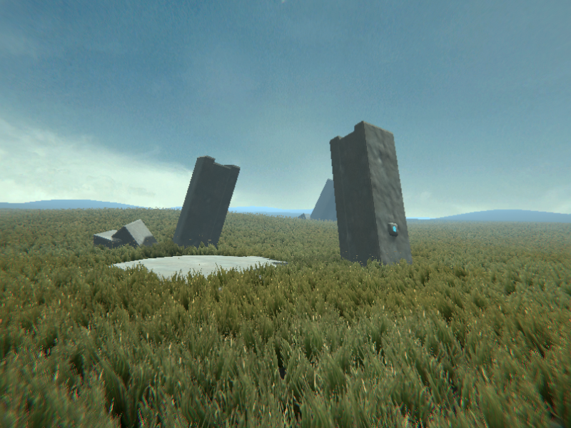
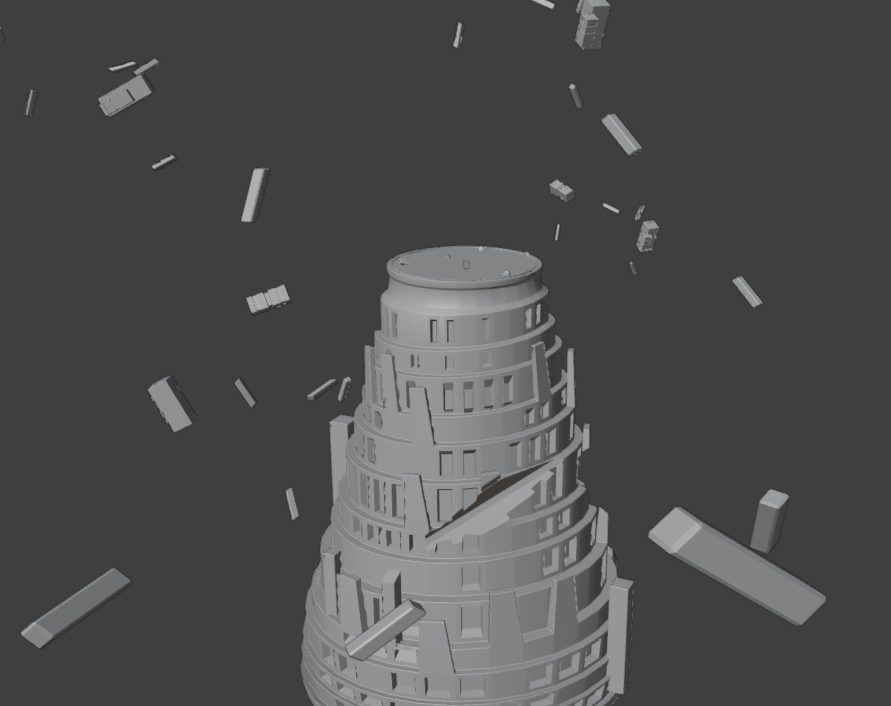
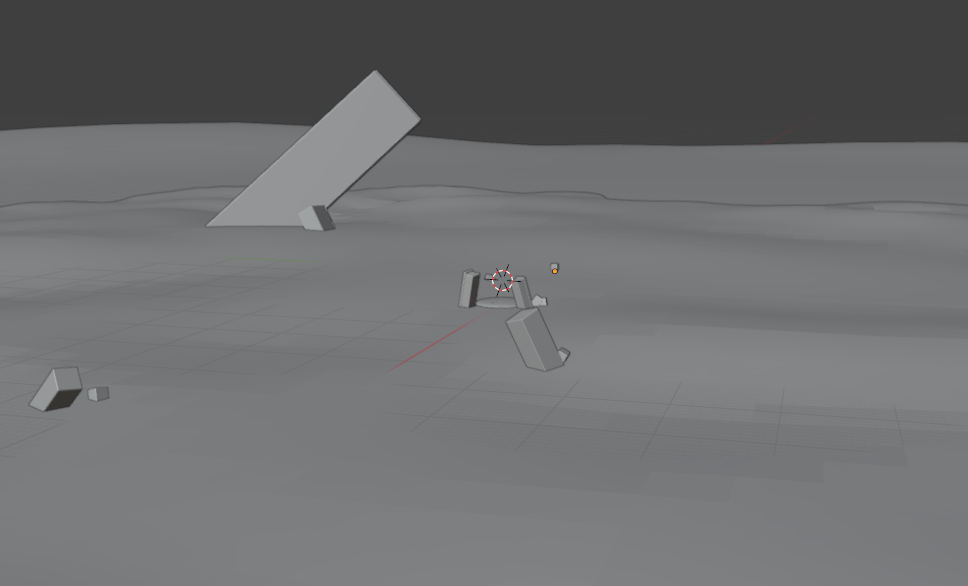
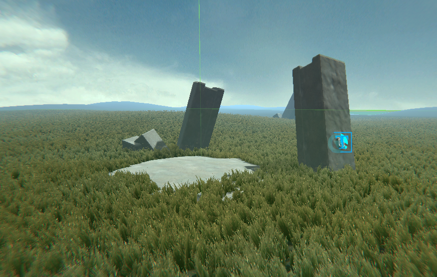
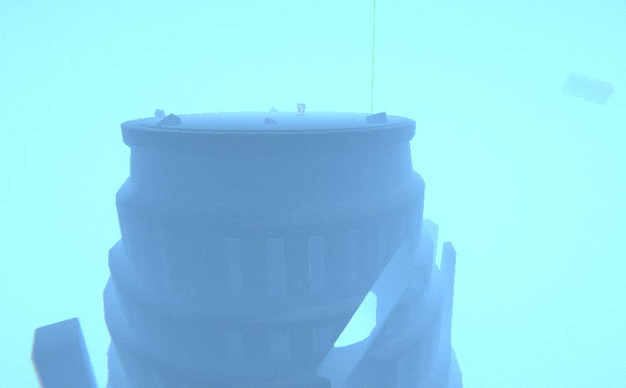
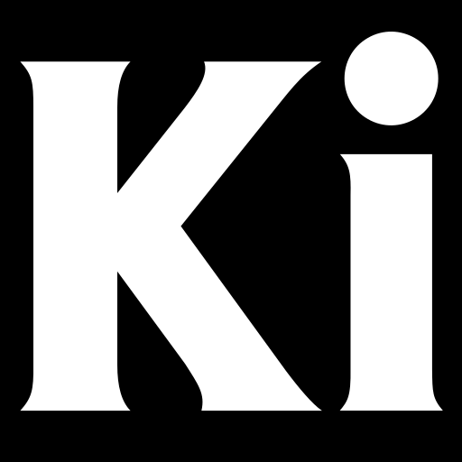
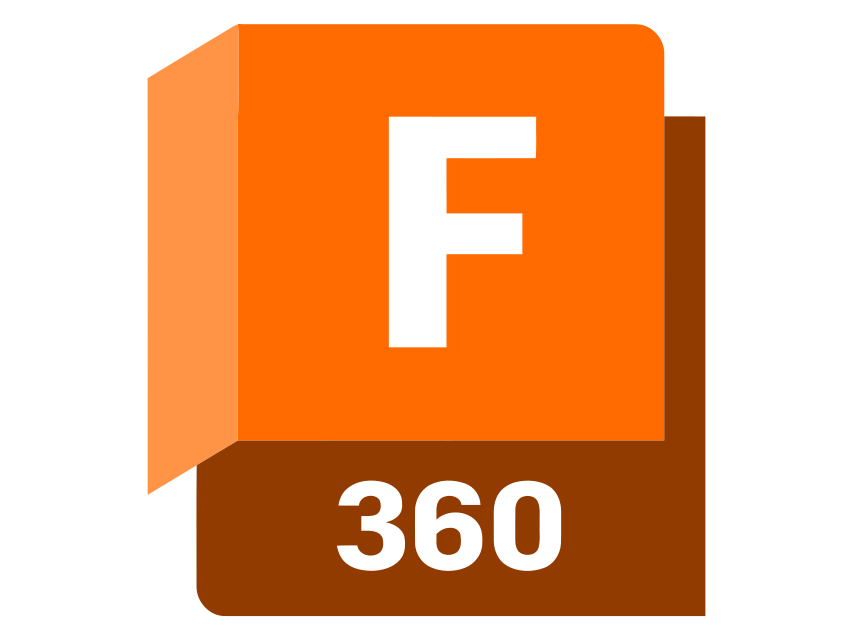
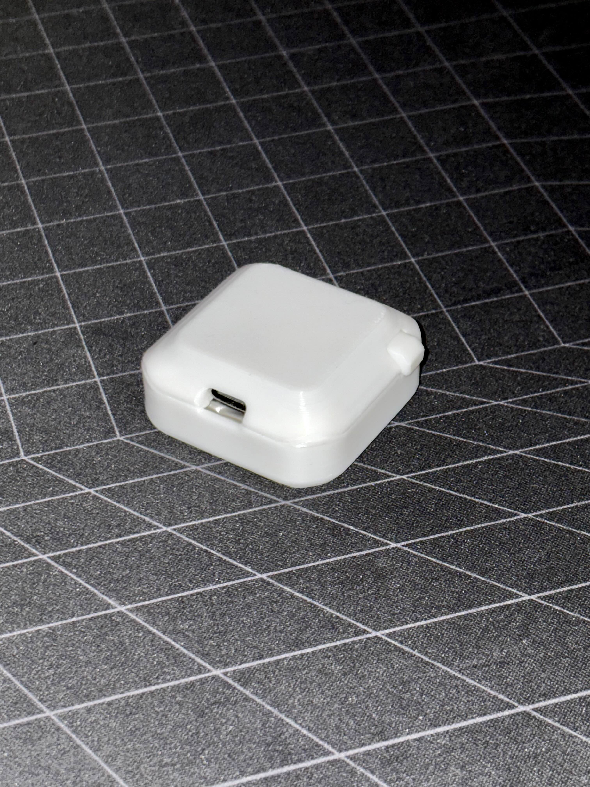
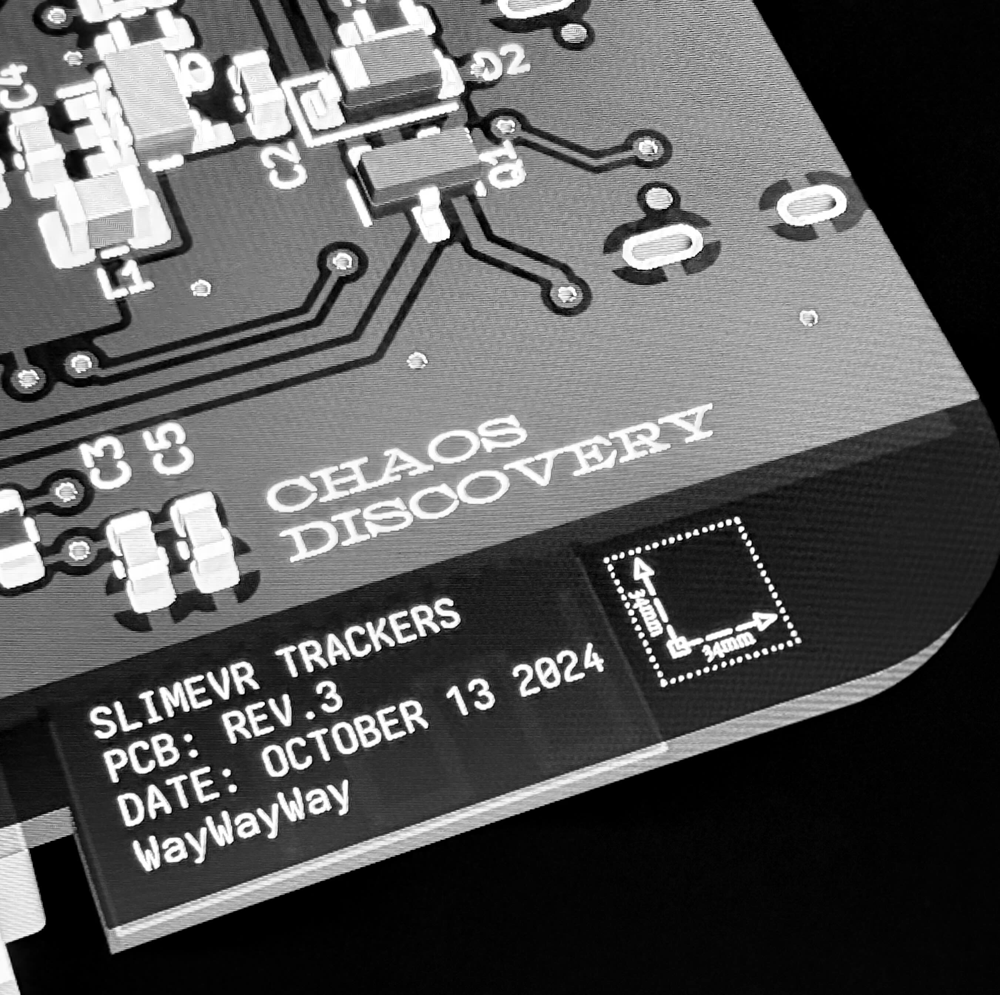
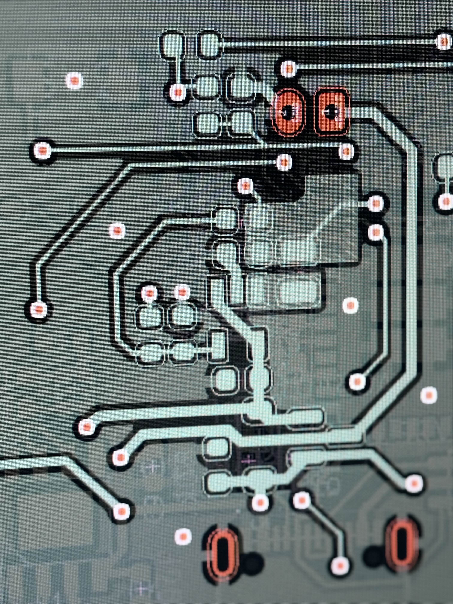

projects
note that this is a static site; i manually cherry-picked each of the projects listed.
i will likely prioritize some of my larger and more meaningful projects over smaller ones. please check my github and other links to see more of my work.
simple password generator
 as my first zig project, i made a simple password generator.
it opens, generates a password according to settings.json, copies it to your clipboard, and closes (all within a couple milliseconds).
on top of this, your recently generated passwords are saved to a log.txt with generic timestamps next to them just in case you lose it. this file will clear itself after it hits 1mb, and should not be used for permanent password storage.
you can download it here
as my first zig project, i made a simple password generator.
it opens, generates a password according to settings.json, copies it to your clipboard, and closes (all within a couple milliseconds).
on top of this, your recently generated passwords are saved to a log.txt with generic timestamps next to them just in case you lose it. this file will clear itself after it hits 1mb, and should not be used for permanent password storage.
you can download it here
vrchat brutalism experience

 after exploring various brutalist creations in vrchat, i realized just how much the style resonates with me. i admire the starkness and unexpected earthiness of brutalism.
it strikes me as more of a realistic reflection on a dystopian future, almost like a cautionary message.
this style of art inspired me, and i really wanted to make my own brutalist piece.
i started by writing down some philosophical ideas that i wanted to represent within my world. i wanted to symbolize personal growth, alongside the trap of stillness and becoming too comfortable.
after getting an idea of the experience i wanted to create, i modeled the world in blender. it was split into two halves: the bottom representing the past, and the top (where you start) representing the present.
then i moved it into unity, adding materials and extra details to the model. i also created sound systems for velocity-based wind distortion and grass footsteps to bring more presence to the experience.
a big part of the world is the grass shader, which i put together with claude, as i don't know hlsl. i knew i wanted quad-based grass using a given texture, so i started with that and prompted until it had the feature set it does now (perlin noise wind movement, distance-shrinking, color and size variation, etc.).
to bring the entire experience together, i put together two ambient soundtracks for the top and bottom halves of the world.
the world has performed extremely well, reaching 200 favorites in only a week <3
after exploring various brutalist creations in vrchat, i realized just how much the style resonates with me. i admire the starkness and unexpected earthiness of brutalism.
it strikes me as more of a realistic reflection on a dystopian future, almost like a cautionary message.
this style of art inspired me, and i really wanted to make my own brutalist piece.
i started by writing down some philosophical ideas that i wanted to represent within my world. i wanted to symbolize personal growth, alongside the trap of stillness and becoming too comfortable.
after getting an idea of the experience i wanted to create, i modeled the world in blender. it was split into two halves: the bottom representing the past, and the top (where you start) representing the present.
then i moved it into unity, adding materials and extra details to the model. i also created sound systems for velocity-based wind distortion and grass footsteps to bring more presence to the experience.
a big part of the world is the grass shader, which i put together with claude, as i don't know hlsl. i knew i wanted quad-based grass using a given texture, so i started with that and prompted until it had the feature set it does now (perlin noise wind movement, distance-shrinking, color and size variation, etc.).
to bring the entire experience together, i put together two ambient soundtracks for the top and bottom halves of the world.
the world has performed extremely well, reaching 200 favorites in only a week <3
 you can visit it here
you can visit it here





virtual reality & motion capture trackers
in early 2024 i began working on a pcb for SlimeVR full-body tracking, intending to only make them for personal use.
four revisions and countless hours of work later, i have landed on one of the most cost-efficient wifi-based designs in the community. this shifted my focus to turning these trackers into a real product.
over the course of this project, i have learned so much about pcb design, creating clean smps layouts, and spending months debugging esp32 chips——only to discover i was supplied locked chips (thanks, pcbway).
these trackers started as something i personally wanted to use and are still designed with that in mind: the best possible wifi-based SlimeVR trackers for myself and others. a solid imu with ~18h battery life in a small, lightweight form factor (44x44x18mm, ~50g).
they will hit the market in 2025 after i get through validation and confirm additional purchasing options (charging dock, material customizations, etc.).





mineimator to blockbench frame converter
one of my friends was frustrated with the animation tools he used for minecraft projects. he wanted the animation capability of mineimator and the 3d modeling of blockbench in one.
using a blockbench plugin called "animated java", he could get some barebones animation support (not very user friendly), but more importantly, a json holding keyframe data.
i analyzed the keyframe output of mineimator and compared it to animated java's json output, brainstorming how i might convert one format to the other.
using zig's standard library json capabilities, i was able to come up with a fairly efficient O(n) (per file) method for converting the data.
while my friend's use case is very niche, someone out there might find it helpful.
you can download it here